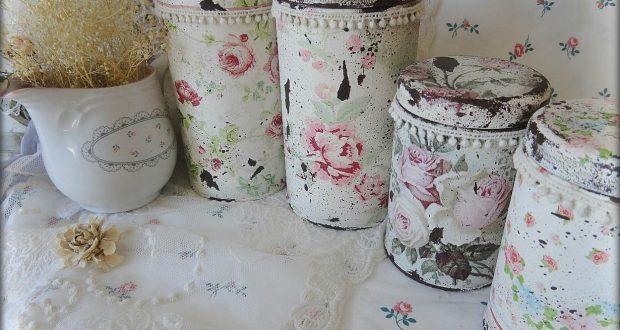
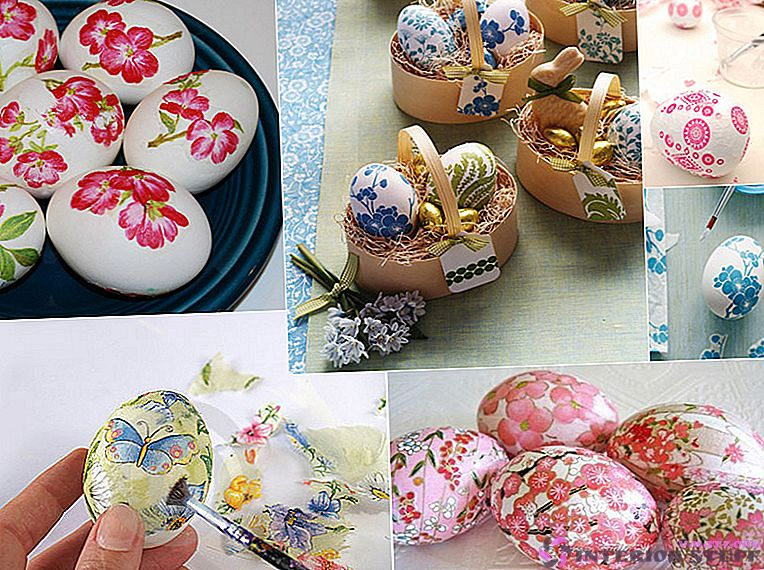
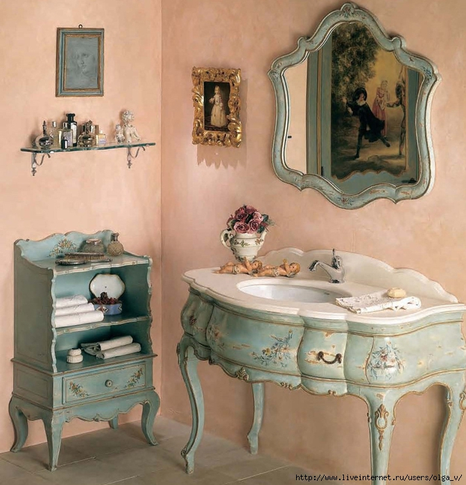
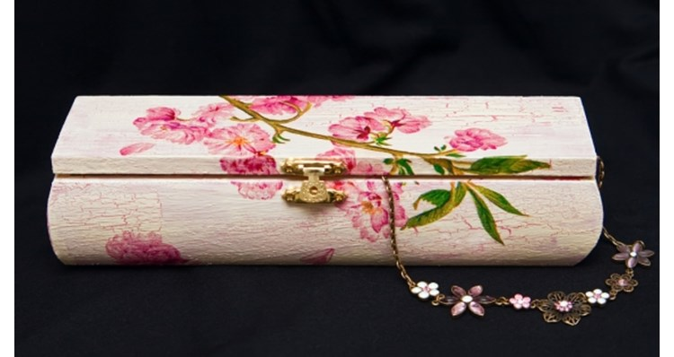
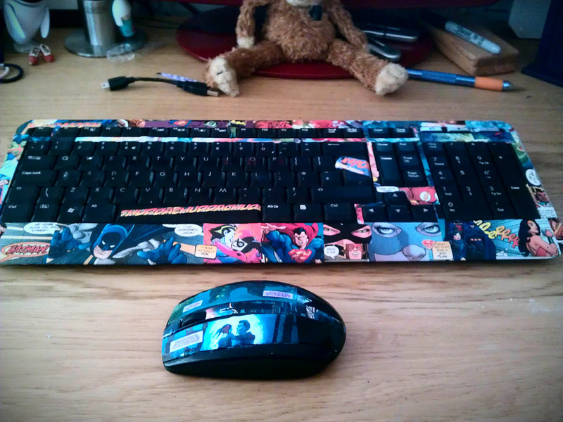
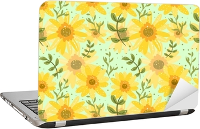

Život je ono što te srećnim čini
Život je ono što te srećnim čini
Decoupage je tehnika ukrašavanja namještaja koja potiče još iz 12. vijeka. Procvat doživljava u 17. vijeku, u romantizmu,kada svoje mjesto pronalazi u dvorcima i raskošnim domovima imućnih plemićkih porodica. Decoupageom su se bavile sve klase društva, pa su čak i plemkinje izrađivale vlastite predmete,a danas su mnogi sačuvani u muzejima kao vrijedna djela.
Decoupage tehnika podrazumijeva izrezivanje motiva i slika te njihovo lijepljenje na predmete. Možete koristiti više vrsta materijala, no najpopularnije su salvete. Zbog pristupačnosti i dostupnosti materijala i prilagodljivosti svim podlogama salvetna tehnika je omiljena i najviše se koristi. Salvete se lako mogu nabaviti u malo boljim papirnicama ili hobi radnjama. Neki se motivi i slikaju ili uzimaju iz časopisa, novina i knjiga. U kombinaciji sa raznim sličnim tehnikama (shabby chic, crackle), s decoupageom možete uljepšati bilo koji predmet – namještaj, lampion, nakit, šalice…
 Za ovu jednostavnu tehniku potreban vam je samo lak, ljepilo, akrilne boje na bazi vode, kist i salvete te posebni završni lak. Decoupage možete primijeniti na drvu, plastici, staklu, metalu, tkaninama, papiru. Postupak je jednostavan, no potrebno je mnogo truda, vježbe, strpljenja (važno je čekati da se svi slojevi dobro osuše!) i koncentracije (ne smijete napraviti pregibe u papiru kojeg lijepite da se ne deformira pri lijepljenju). Kako je tehnika decoupagea postala vrlo popularna, možete pronaći i posebne trgovine sa opremom za decoupage.
Nakon što očistite predmet kojeg želite ukrasiti, obojite ga akrilnom bojom, ostavite ga da se osuši i, ukoliko je potrebno, obojite još jedanput. Motiv za ukrašavanje izrezujete (ako koristite salvete, ne zaboravite odvojiti samo sloj s motivom), i u veličini motiva prethodno kistom nanesite lak-ljepilo na predmet. Pažljivo položite motiv(e) na premet i odmah kistom ili prstima poravnajte salvetu tako da ljepilom ponovno prijeđete lagano preko motiva od sredine prema rubovima. Pazite da ne ostanu nabori i da ne stavite previše ljepila, kako bi dobili uredan motiv.
 Još par sitnih uputa:
 
Par tutorijala: